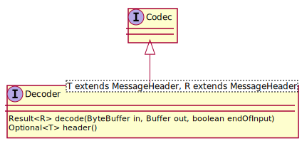
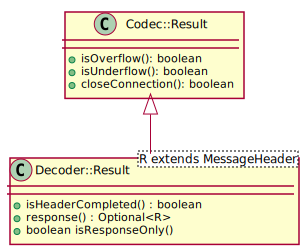
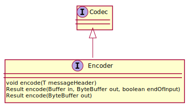

See: Description
| Package | Description |
|---|---|
| org.jdrupes.httpcodec |
The entry point interfaces and classes.
|
| org.jdrupes.httpcodec.plugin | |
| org.jdrupes.httpcodec.protocols.http | |
| org.jdrupes.httpcodec.protocols.http.client | |
| org.jdrupes.httpcodec.protocols.http.fields | |
| org.jdrupes.httpcodec.protocols.http.server | |
| org.jdrupes.httpcodec.protocols.websocket | |
| org.jdrupes.httpcodec.util |
HTTP codecs for non-blocking I/O.
The HTTP codecs are modeled after the Java
CharsetDecoder and
CharsetEncoder.
A decoder is an engine that transforms a sequence
of bytes into a sequence of (initially) HTTP requests or responses.
An encoder transforms an HTTP request or
response (including the payload data) into a sequence of bytes.
The main difference between the Charset codecs and the HTTP codecs API
is due to the type of the decoded data. For Charset codecs this is a
homogeneous stream of chars, which is easy to handle. For HTTP codecs,
it’s a mixture of headers and body data which can again consist
of bytes or chars.
Decoders realize the Decoder interface.

Binary data received from the network stream is passed to the
Decoder.decode(java.nio.ByteBuffer, java.nio.Buffer, boolean) method in
a ByteBuffer. The method consumes as much data
as possible from the buffer and returns the result of the decoding
process.

The basic information provided by the decoding process (defined in
Codec.Result) is
known from the Charset codecs. “Underflow” indicates that more input
data is needed in order to complete the decoding. “Overflow” indicates that
the output buffer is full. In addition,
Codec.Result.getCloseConnection() may indicate
that the connection, from which the data is obtained, should be closed.
This indication is needed because closing the connection
is sometimes required by HTTP. As a codec cannot close the connection
itself, this must be done by the invoker (the supplier of the data stream).
Besides streams with body data, decoders such as an HTTP decoder
provide the headers that precede this (payload) data. The successful decoding
of a header is indicated in the result by
Decoder.Result.isHeaderCompleted(). The
decoded header can be retrieved with
Decoder.getHeader().
Due to the details of the HTTP, it may be necessary to include
certain information in a response to a given (decoded) request. Of course,
the user of the HTTP codecs should not have to know about these details.
A decoder that decodes a request may therefore prepare a header that is
to be used for the response. This header can be obtained from
Decoder.Result.getResponse().
In the special case that a request violates the protocol, a response is
prepared that signals back the error. In such a case (indicated by
Decoder.Result.isResponseOnly()) the
header should immediately be passed to the corresponding encoder and
sent back to the requester. Note that not every exceptional situation
requires the connection to be closed. It is possible that
isResponseOnly returns true and getCloseConnection returns false.
A sample usage of the decoder can be found in the demo code.
Encoders realize the Encoder interface.

Encoding is started with a call to
Encoder.encode(MessageHeader). Subsequent
calls to
Encoder.encode(Buffer, ByteBuffer, boolean)
fill the output buffer with the encoded header and the body data.
If the information in the header indicates that the message does not
have a body, Encoder.encode(ByteBuffer)
can be called.
The result of the encode method is simply a Codec.Result that indicates
whether the output buffer is full and/or further body data is required.